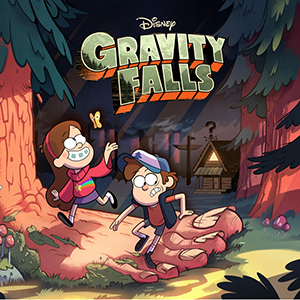
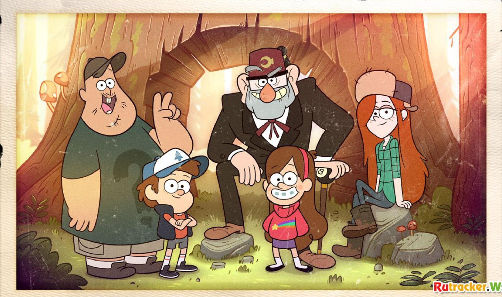

«Таємни́ці Ґра́віті Фо́лз» (англ. Gravity Falls) — американський анімаційний телевізійний серіал Алекса Гірша, створений студією «Disney Television Animation» для каналу Disney Channel та Disney XD. Перший епізод першого сезону було попередньо показано 15 червня 2012 року; офіційна прем'єра відбулася 29 червня 2012 року. Всього Disney показав два сезони мультсеріалу, по 20 епізодів у кожному сезоні. Останній, 40-вий епізод тривалістю 44 хвилини (решта тривали по 24 хвилини), вперше вийшов у США на Disney XD 15 лютого 2016 року та встановив рекорд переглядів. Епізод переглянули одночасно 2,9 млн глядачів.
Особливістю серіалу є численні шифри та загадки, сховані на кадрах, у звуковій доріжці, які дають підказки щодо наступних епізодів, персонажів і подій. «Таємниці Ґравіті Фолз» неодноразово номінувався на премії Annie Awards, Teen Choice Awards, Golden Reel Award, PAAFTJ Television Awards, Critics' Choice Television Awards, Behind the Voice Actors Awards і Primetime Creative Arts Emmy Awards та кілька разів вигравав їх.
Близнюків Діппера і Мейбл Пайнс батьки відправили на літні канікули в містечко Ґравіті Фолз в Орегоні до двоюрідного дядька Стенлі (Стена). Дядько Стен, який перетворив своє житло на музей дивовиж і магазин сувенірів під назвою «Хижка Чудес», звалює на близнюків купу роботи. Згодом Діппер помічає дивні події в містечку, а одного разу, виконуючи чергове завдання Стена, випадково знаходить сховок зі щоденником, в якому описані таємниці Ґравіті Фолз. Оскільки щоденник був незавершений і мав номер 3, Діппер береться розшукувати інші два і їхнього автора, потрапляючи з сестрою та іншими персонажами в різноманітні пригоди.